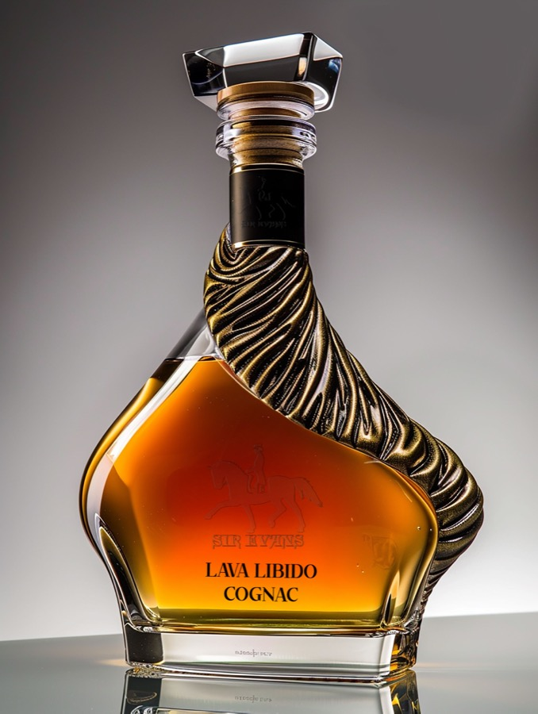
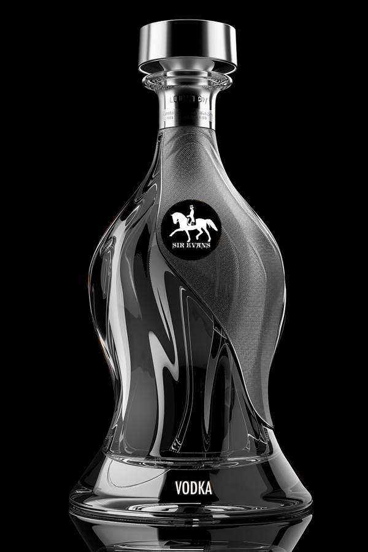
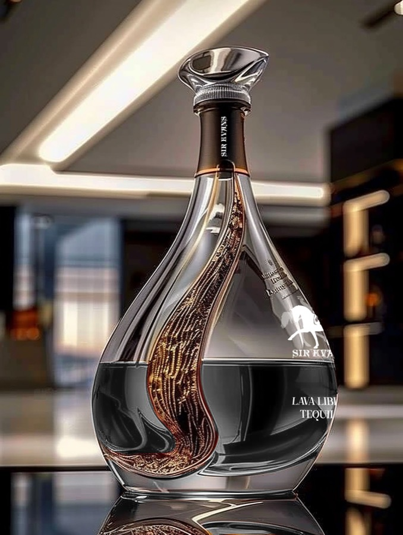

The Evans Guild — Live Site

theevansguild.com — full website design and build by Moor Graphix
Sir Evans — Spirits Line
A recent brand extension into the spirits category — premium cognac, vodka, and tequila packaging design carrying the Sir Evans equestrian mark into a new product world.


